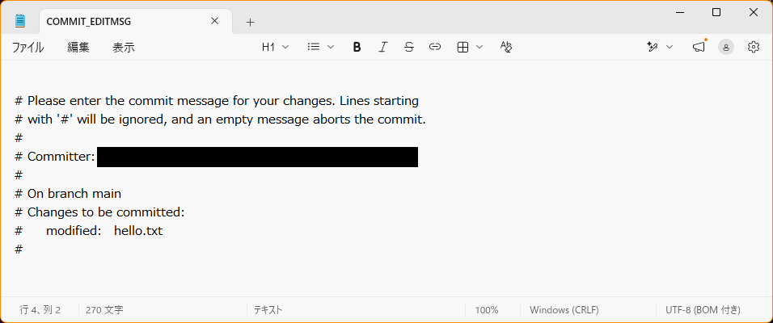

Git の基本：記録をつくる
- Git が「何をする道具か」を、自分の言葉で説明できる
- フォルダを Git で管理し、変更を「記録（コミット）」できる
- 記録の一覧（履歴）を見て、変更の中身を確かめられる
3-1. Git は「変更の記録を残す道具」
第0章で、Git は「ファイルの変更履歴を記録する道具」と説明しました。まず、身近な場面から考えてみます。職場の共有フォルダで、みんなで同じファイルを編集したことはありませんか？ そのとき、こんな困りごとが起きがちです。
| 共有フォルダで、よくある困りごと | Git を使うと |
|---|---|
| 誰かが上書き保存して、自分が直した部分が消えていた | 保存のたびの「記録」が残るので、消える前の状態を取り出せる（第5章）。ほかの人と作業するときは、お互いの変更をまとめる仕組みがある（第7章以降） |
| いつの間にか内容が変わっていて、誰が、なぜ変えたのか分からない | 記録に「いつ・誰が・何を・なぜ」が残る（この章の git log） |
| 「先週の版に戻したい」と思っても、古い版が残っていない | 記録した時点なら、いつでも戻せる（第5章） |
| 念のためのコピーが増えて、どれが最新か分からない | ファイルは1つのまま。古い版は、Git が裏で覚えている |
まとめると、Git は、こんな場面で役に立ちます。
- 「
報告書_最終.docx」「報告書_最終_修正版.docx」「報告書_最終_本当に最終.docx」……のように、ファイルを何個も作らなくて済む。1つのファイルのまま、過去の状態に戻れる。 - 「いつ、誰が、なぜ、変えたのか」が、記録として残る。
- パソコンが壊れても、GitHub に置いた記録から、元に戻せる（第4章）。ほかの人と作業しても、お互いの変更をまとめられる（第7章以降）。
この章では、まず一人で、Git の基本の流れを体験します。
この章で使う言葉
| 言葉 | 意味 |
|---|---|
| リポジトリ（repository） | Git が記録を保管する「倉庫」。フォルダの中の .git という隠しフォルダに作られる |
| コミット（commit） | 変更を「ひとまとまりの記録」として、リポジトリに保存すること。また、その記録そのもの |
| 履歴 | コミットの一覧。「いつ・誰が・何を変えたか」の並び |
| ステージ | 次のコミットに入れる変更を、並べておく場所 |
3-2. 3つの場所：作業フォルダ・ステージ・リポジトリ
Git を理解する一番の近道は、ファイルがいる「3つの場所」を知ることです。
add でステージに並べ、commit でリポジトリに記録するadd して、1つの記録にできます。写真で「写る人だけを並ばせてから、シャッターを押す」のと同じです。
3-3. 実際にやってみよう
練習用のフォルダ my-notes を作り、Git で管理します。場所は、学習用フォルダ C:\work の中です（OneDrive の外）。
- 入力モードは「半角英数」に。
gitのあとは、半角スペースを入れます。git statusのように、git・やること・対象を、スペースで区切ります。- Git の表示は、英語であることが多いです（日本語で表示される環境もあります）。意味は同じです（下の対応表を参照）。
手順1：準備する
PowerShell を開き、学習用フォルダに移動します。次に、Git が使えるか確認します。
cd C:\work
git --versionPS C:\work> git --version git version 2.xx.x.windows.1
git version … と表示されれば OK です（数字は、人によって違います）。表示されないときは、第0章の「うまくいかないとき」を見てください。
次に、これから作るリポジトリの「最初の枝の名前」を main にする設定をします。この設定は、一度だけで大丈夫です。
git config --global init.defaultBranch main💡 「枝（ブランチ）」は第6章で学びます。今は、「GitHub の標準に、名前をそろえる設定」と思ってください。
手順2：フォルダを作って、リポジトリにする
mkdir my-notes
cd my-notes
git initPS C:\work> mkdir my-notes PS C:\work> cd my-notes PS C:\work\my-notes> git init Initialized empty Git repository in C:/work/my-notes/.git/
「空の Git リポジトリを作りました」という意味です。これで、my-notes フォルダが、Git の管理対象になりました。
💡 init は initialize（初期化する）の略です。
git init は、場所を確かめてから
git init は、今いるフォルダを、Git の管理対象にします。C:\work や、ユーザーフォルダのような「大きな場所」で打つと、その中のすべてのフォルダが対象になってしまいます。必ず、プロンプトで場所を確認してから打ってください。また、git init は、フォルダごとに1回だけです。
手順3：状態を確認する
git statusPS C:\work\my-notes> git status On branch main No commits yet nothing to commit (create/copy files and use "git add" to track)
git status は、「今、どういう状態か」を教えてくれるコマンドです。Git を使うときは、迷ったらまず git status を打ちます。何度打っても、安全です。
💡 status は「状態」という意味です。
| 英語の表示 | 日本語で表示される環境での例 | 意味 |
|---|---|---|
On branch main | ブランチ main など | 今、main という枝にいる |
No commits yet | まだコミットがありません | 記録が、まだ1つもない |
Untracked files | 追跡されていないファイル | Git が、まだ記録の対象にしていないファイル |
Changes to be committed | コミット予定の変更 など | ステージに並んでいる（次のコミットに入る）変更 |
Changes not staged for commit | コミットのためにステージされていない変更 など | 変更したが、まだステージに並べていない |
nothing to commit, working tree clean | コミットするものはありません など | 記録していない変更は、ない |
手順4：ファイルを作る
第2章で学んだ方法で、空のファイルを作り、メモ帳で開いて書きます。
New-Item hello.txt
notepad hello.txtメモ帳が開いたら、hello git と書き、最後に Enter で改行して保存（Ctrl + S）、メモ帳を閉じます。もう一度、状態を見ます。
git statusPS C:\work\my-notes> git status On branch main No commits yet Untracked files: (use "git add <file>..." to include in what will be committed) hello.txt nothing added to commit but untracked files present (use "git add" to track)
Untracked files（追跡されていないファイル）に、hello.txt が出ました。「新しいファイルがあるけれど、まだ記録の対象にしていないよ」という意味です。親切に、次にすることも教えてくれています（use "git add" to track）。
手順5：ステージに並べる（add）
git add hello.txt
git statusPS C:\work\my-notes> git add hello.txt PS C:\work\my-notes> git status On branch main No commits yet Changes to be committed: (use "git rm --cached <file>..." to unstage) new file: hello.txt
表示が、Changes to be committed（コミットされる変更）に変わりました。hello.txt がステージに並んだのです。まだ記録はされていません。
💡 add は「追加する」。ステージに、追加します。
手順6：記録する（commit）
git commit -m "Add hello.txt"PS C:\work\my-notes> git commit -m "Add hello.txt" [main (root-commit) 3f2a9c1] Add hello.txt 1 file changed, 1 insertion(+) create mode 100644 hello.txt
これが、最初のコミット（記録）です。-m のあとの " " の中は、「何をしたか」を書くメッセージです。あとで履歴を見たとき、このメッセージで内容が分かります。
💡 commit は「約束する」「確定する」という意味です。変更を、記録として確定します。-m は message（メッセージ）の頭文字です。
-m を付け忘れると
-m を付けずに、git commit "メッセージ" と打つと、次のエラーになります。
PS C:\work\my-notes> git commit "testcommit" error: pathspec 'testcommit' did not match any file(s) known to git「
testcommit というファイルは、見つかりません」という意味です。Git は、-m がないと、メッセージをファイルの名前だと思ってしまいます。git commit -m "メッセージ" と、メッセージの前に -m を付けて、打ち直してください。
-mは付けたのに、メッセージを書き忘れる（git commit -mで終わる）と、error: switch `m' requires a value（「-mには、値が必要です」）と出ます。git commit -m ""（空のメッセージ）と打っても、同じエラーになります。-mのあとに、" "で囲んだメッセージを書いて、打ち直してください。- 変更が何もないときに、
git commitだけ打つと、nothing to commit, working tree clean（記録するものがない）と出ます。壊れてはいません。 - 変更を
addしたあとで、-mなしのgit commitを打つと、メモ帳が開きます（第0章で、エディタをメモ帳にしたためです）。1行目に、メッセージを書いて、保存して閉じると、記録されます。#で始まる行は、説明なので、消さなくても構いません。何も書かずに閉じると、Aborting commit due to empty commit message.（メッセージが空なので、中止）と出て、記録されません。これも、壊れてはいません。

-m なしで git commit を打つと、メモ帳が開く（ファイル名は COMMIT_EDITMSG）。1行目にメッセージを書いて、保存して閉じる。（メールアドレスは、黒く塗りつぶしてあります）- ターミナルに、
hint: Waiting for your editor to close the file...（エディタが閉じるのを待っています）と出ます。メモ帳を閉じると、続きが進みます。ターミナルが止まっているように見えても、慌てないでください。 - そのあと、
unix2dos: converting file …、dos2unix: converting file …と出ることがあります。改行の形式を、自動で変換しているお知らせです。無視して構いません。 - メモ帳の上に、文字を装飾するボタン（
H1、B、Iなど）が出ていても、使わないでください。書式のための記号が、文字として入ってしまうことがあります。 - 日本語のメッセージを書いても、そのまま記録できます。
Committer: （あなたの名前） <（ユーザー名@パソコン名.local）>
Your name and email address were configured automatically
based on your username and hostname. Please check that they are accurate.
You can suppress this message by setting them explicitly:
git config --global user.name "Your Name"
git config --global user.email you@example.com
「名前とメールアドレスが、自動で設定されました。正しいか確認してください」という意味です。第0章の user.name と user.email の設定が、足りていません。よくあるのは、user.email を設定していない場合、user.name に、メールアドレスを入れてしまった場合です。git config --global --list で確かめて、第0章 0-10 の手順で、設定し直してください。
すでに作ったコミットの名前は、変わりません。練習用なので、そのまま続けて構いません（直したいときは、次のコミットから、正しい名前になります）。
git commit を打ってください。
core.autocrlf=true）になっています。この警告は、出ない場合もあります。どちらでも、この教材では、気にしなくて構いません。
手順7：履歴を見る（log）
git logPS C:\work\my-notes> git log commit 3f2a9c1e5b7d4a8c0f6e2b9d1a3c5e7f8b0d4a6c (HEAD -> main) Author: chitchi1216 <chitchi1216@example.com> Date: Sun Oct 11 10:45:12 2026 +0900 Add hello.txt
記録の一覧が出ます。1つの記録（コミット）には、次の情報が入っています。
| 項目 | 意味 |
|---|---|
commit 3f2a9c1e… | この記録のID（長い英数字）。世界中で、重ならない番号。先頭の7文字ほどで、区別できる |
(HEAD -> main) | 「今、ここにいる」という目印。main の、いちばん新しい記録 |
Author | 記録した人（第0章で設定した名前とメール） |
Date | 記録した日時 |
| 最後の行 | コミットのときに書いた、メッセージ |
q を押す
記録が多いと、一度に表示しきれず、画面が止まったように見えます。慌てず、キーボードの q を押すと、元の画面に戻ります。↑ ↓ で、スクロールもできます。
💡 log は「記録（ログ）」という意味です。
--oneline の、ハイフンは2つ
git log --oneline の、oneline の前のハイフンは、2つです。git log -oneline（1つ）と打つと、fatal: unrecognized argument: -oneline（認識できない引数）というエラーになります。エラーが出たら、↑ キーで直して、打ち直してください。
cd C:\work\my-notes で戻ってから、始めてください。
手順8：もう一度、変更して、記録する
Git の本領は、「変更を重ねて記録する」ところです。hello.txt に、1行足してみましょう。
notepad hello.txtsecond line と1行足して、最後に Enter で改行して保存し、メモ帳を閉じます。そして、状態と、変更の中身を見ます。
git status
git diffPS C:\work\my-notes> git status On branch main Changes not staged for commit: (use "git add <file>..." to update what will be committed) (use "git restore <file>..." to discard changes in working directory) modified: hello.txt no changes added to commit (use "git add" and/or "git commit -a") PS C:\work\my-notes> git diff diff --git a/hello.txt b/hello.txt index 3b18e51..a1b2c3d 100644 --- a/hello.txt +++ b/hello.txt @@ -1 +1,2 @@ hello git +second line
modified（変更された）と出ました。git diff は、「前の記録から、何が変わったか」を見せてくれます。+ が付いた行が、足された行です（消された行は - で表示されます）。
💡 diff は difference（違い、差分）の略です。
変更を、ステージに並べて、記録します。
git add hello.txt
git commit -m "Add second line to hello.txt"
git log --onelinePS C:\work\my-notes> git add hello.txt PS C:\work\my-notes> git commit -m "Add second line to hello.txt" [main 7b1e4d8] Add second line to hello.txt 1 file changed, 1 insertion(+) PS C:\work\my-notes> git log --oneline 7b1e4d8 (HEAD -> main) Add second line to hello.txt 3f2a9c1 Add hello.txt
--oneline を付けると、1つの記録を1行で表示します。履歴が長くなったとき、全体を見渡すのに便利です。記録が、2つに増えました。
ここまでの流れ（まとめ）
- ファイルを作る・変える（メモ帳など）
git statusで、状態を確かめるgit add ファイル名で、ステージに並べるgit commit -m "メッセージ"で、記録するgit log --onelineで、履歴を見る
この「変える → add → commit」が、Git の基本のくり返しです。
☕ コーヒーブレイク：Git は、誰が、何のために作ったの？（読み飛ばしてOK）
Git は、2005年に、Linux カーネル（世界中で使われている OS の中心部分）を開発するために、リーナス・トーバルズ（Linus Torvalds）が作りました。Linux の開発には、世界中の何千人もが関わっています。「大勢が、同時に、同じファイルを変更しても、混乱しない」仕組みが、どうしても必要だったのです。
Git が速く、大きなプロジェクトにも強いのは、そうした厳しい使い方を前提に作られたからです。今では、Linux だけでなく、世界中の、ほとんどのソフトウェア開発で使われています。
「git」という名前の由来は、英語の俗語で「いやなやつ」「つまらないやつ」といった意味だとされています。作者が、自分のことを冗談めかして呼んだ名前だ、という話が有名です。
3-4. チャレンジ
必須ではありません。気軽に挑戦してください。C:\work\my-notes にいる状態で始めます。
.git の中を、のぞいてみる
.git は隠しフォルダなので、ふつうの ls では見えません。隠しフォルダも含めて一覧を表示し、.git の中身と、.git の中の HEAD というファイルの中身を見てください。
ヒント
隠しファイルも出すには、ls のあとに -Force を付けます。HEAD の中身は、第2章で学んだ、ファイルの中身を見るコマンドで見られます。
こたえと解説
ls -Force
ls .git
type .git\HEADPS C:\work\my-notes> type .git\HEAD ref: refs/heads/main
.git の中には、HEAD、config、objects などが入っています。HEAD には、「今いるのは main という枝」と書かれています。Git の記録は、すべてこのフォルダの中の、ただのファイルです。-Force は「強制的に（隠しも）」という意味です。
.git の中は、触らない
見るだけにしてください。.git を消したり、中のファイルを書き換えたりすると、履歴がすべて失われることがあります。
第2章で、ファイルの中から文字を探しました。コミットのメッセージの中から、second という文字を含むコミットを探してください。
ヒント
git log に、--grep=探す文字 を付けます。見やすくするために、--oneline も一緒に付けましょう。
こたえと解説
git log --oneline --grep=secondPS C:\work\my-notes> git log --oneline --grep=second 7b1e4d8 Add second line to hello.txt
メッセージに second が入っている記録だけが、出てきます。履歴が何百件にもなると、こうした検索が役に立ちます。メッセージを、あとで探せるように、具体的に書くことが大切な理由でもあります。
hello.txt に、もう1行足して（半角英数でよい）、日本語のメッセージでコミットしてみましょう。たとえば、git commit -m "3行目を追加" です。そのあと、git log --oneline で、日本語が正しく表示されるか確かめてください。
ヒント
コミットするときは、日本語入力に切り替えて、メッセージの部分だけ日本語にします。git add を、お忘れなく。
こたえと解説
多くの環境では、日本語のメッセージが、そのまま正しく表示されます。そのまま使えます。
もし文字化け（意味の分からない文字）になったときは、Git の記録は正しくても、PowerShell の表示の設定が合っていないだけです。次のコマンドで、表示の設定を変えて、もう一度 git log --oneline を打ってみてください（今開いている PowerShell だけに効く、一時的な設定です）。
[Console]::OutputEncoding = [System.Text.Encoding]::UTF8日本語のメッセージが使えると、あとで読み返すときに、「何をしたか」がすぐ分かります。どちらを使うかは、自分で（ほかの人と一緒に使うなら、話し合って）決めましょう。
確認クイズ
Q1. ファイルを、作業フォルダから、ステージに並べるコマンドは？
git add ファイル名。（ステージに並べるだけで、まだ記録はされない）
Q2. git commit -m "…" の、-m のあとに書くものは何ですか？
「何をしたか」を表す、メッセージ。あとで履歴を見たとき、記録の内容が分かるようにするため。
Q3. どんな状態か分からなくなったとき、まず打つコマンドは？
git status。何度打っても安全で、今の状態と、次にできることを教えてくれる。
Q4. git log の画面が止まって、戻れなくなったときは？
q キーを押す。
Q5. なぜ、git init を打つ前に、プロンプトで場所を確認するのですか？
git init は、今いるフォルダを Git の管理対象にするため。C:\work のような大きな場所で打つと、その中のすべてのフォルダが対象になってしまう。
話し合おう・考えてみよう
- Git の「add と commit の2段階」は、どんな場面で便利だと思いますか？
- コミットメッセージを、日本語と英語のどちらで書きますか？ その理由は？（ほかの人と一緒に使うなら、ルールをどう決めますか？）
- 「変更の記録を残す」ことが、仕事や日常のどんな場面で役に立ちそうですか？